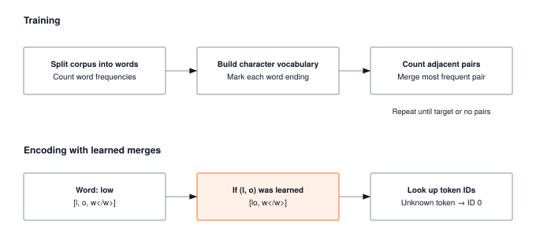

Module 10: Tokenization
A language model never sees text. It sees token IDs. The vocabulary you pick upstream silently caps sequence length, embedding-table size, and every attention cost downstream. That single design choice is the first systems decision of the language stack.
ARCHITECTURE TIER | Difficulty: ●●○○ | Time: 4-6 hours | Prerequisites: 01-08
You should have completed the Foundation tier:
- Tensor operations (Module 01)
- Basic neural network components (Modules 02-04)
- Training fundamentals (Modules 05-07)
Tokenization stands largely on its own — it works with strings and dictionaries, not gradients. If you can manipulate Python strings, you’re ready.
🎧 Audio Overview
Listen to an AI-generated overview.
Overview
Text isn’t the input to a language model. Tokens are. Before a single matrix multiply happens inside GPT, every character of your prompt has already been chopped, merged, and looked up in a fixed vocabulary — and that one upstream choice silently decides how long your sequences are, how big your embedding table is, and how much an inference call costs.
In this module you build two tokenizers from scratch: a character-level tokenizer (one character, one token) and a Byte Pair Encoding (BPE) tokenizer that learns subword units from data. Doing both surfaces the central trade-off: small vocabularies yield long sequences and tiny embedding tables; large vocabularies yield short sequences but multi-megabyte embeddings. Attention cost scales quadratically with sequence length, so this trade is rarely close.
By the end you can explain why GPT uses ~50,000 tokens, how tokenizers degrade gracefully on unknown words, and how the vocabulary you pick today caps the throughput of every model you train tomorrow.
Learning Objectives
- Implement character-level tokenization for robust text coverage and BPE tokenization for efficient subword representation
- Understand the vocabulary size versus sequence length trade-off and its impact on memory and computation
- Master encoding and decoding operations that convert between text and numerical token IDs
- Connect your implementation to production tokenizers used in GPT, BERT, and modern language models
What You’ll Build

Implementation roadmap:
Table 1 lays out the implementation in order, one part at a time.
| Part | What You’ll Implement | Key Concept |
|---|---|---|
| 1 | Tokenizer base class |
Interface contract: encode/decode |
| 2 | CharTokenizer |
Character-level vocabulary, perfect coverage |
| 3 | BPETokenizer |
Byte Pair Encoding, learning merges |
| 4 | Vocabulary building | Unique character extraction, frequency analysis |
| 5 | Utility functions | Dataset processing, analysis tools |
The pattern you’ll enable:
# Converting text to numbers for neural networks
tokenizer = BPETokenizer(vocab_size=1000)
tokenizer.train(corpus)
token_ids = tokenizer.encode("Hello world") # [142, 1847, 2341]What You’re NOT Building (Yet)
To keep this module focused, you will not implement:
- GPU-accelerated tokenization (production tokenizers use Rust/C++)
- Advanced segmentation algorithms (SentencePiece, Unigram models)
- Language-specific preprocessing (Unicode normalization, byte-level fallback)
- Tokenizer serialization and loading (PyTorch handles this with
save_pretrained())
You are building the conceptual foundation. Production optimizations come later.
API Reference
This section provides a quick reference for the tokenization classes you’ll build. Think of it as your cheat sheet while implementing and debugging.
Base Tokenizer Interface
Tokenizer()- Abstract base class defining the tokenizer contract
- All tokenizers must implement
encode()anddecode()
CharTokenizer
CharTokenizer(vocab: Optional[List[str]] = None)- Character-level tokenizer treating each character as a token
vocab: Optional list of characters to include in vocabulary
Table 2 lists the methods you will implement on this class.
| Method | Signature | Description |
|---|---|---|
build_vocab |
build_vocab(corpus: List[str]) -> None |
Extract unique characters from corpus |
encode |
encode(text: str) -> List[int] |
Convert text to character IDs |
decode |
decode(tokens: List[int]) -> str |
Convert character IDs back to text |
Properties: - vocab: List of characters in vocabulary - vocab_size: Total number of unique characters + special tokens - char_to_id: Mapping from characters to IDs - id_to_char: Mapping from IDs to characters - unk_id: ID for unknown characters (always 0)
BPETokenizer
BPETokenizer(vocab_size: int = 1000)- Byte Pair Encoding tokenizer learning subword units
vocab_size: Target vocabulary size after training
Table 3 lists the methods you will implement on this class.
| Method | Signature | Description |
|---|---|---|
train |
train(corpus: List[str], vocab_size: int = None) -> None |
Learn BPE merges from corpus |
encode |
encode(text: str) -> List[int] |
Convert text to subword token IDs |
decode |
decode(tokens: List[int]) -> str |
Convert token IDs back to text |
Helper Methods:
Table 4 lists the methods you will implement on this class.
| Method | Signature | Description |
|---|---|---|
_get_word_tokens |
_get_word_tokens(word: str) -> List[str] |
Convert word to character list with end-of-word marker |
_get_pairs |
_get_pairs(word_tokens: List[str]) -> Set[Tuple[str, str]] |
Extract all adjacent character pairs |
_apply_merges |
_apply_merges(tokens: List[str]) -> List[str] |
Apply learned merge rules to token sequence |
_build_mappings |
_build_mappings() -> None |
Build token-to-ID and ID-to-token dictionaries |
Properties: - vocab: List of tokens (characters + learned merges) - vocab_size: Total vocabulary size - merges: List of learned merge rules (pair tuples) - token_to_id: Mapping from tokens to IDs - id_to_token: Mapping from IDs to tokens
Utility Functions
Table 5 lists the utility helpers that accompany the tokenizers.
| Function | Signature | Description |
|---|---|---|
create_tokenizer |
create_tokenizer(strategy: str, vocab_size: int, corpus: List[str]) -> Tokenizer |
Factory for creating tokenizers |
tokenize_dataset |
tokenize_dataset(texts: List[str], tokenizer: Tokenizer, max_length: int) -> List[List[int]] |
Batch tokenization with length limits |
analyze_tokenization |
analyze_tokenization(texts: List[str], tokenizer: Tokenizer) -> Dict[str, float] |
Compute statistics and metrics |
Core Concepts
This section covers the fundamental ideas you need to understand tokenization deeply. These concepts apply to every NLP system, from simple chatbots to large language models.
Text to Numbers
Neural networks process numbers, not text. When you pass the string “Hello” to a model, it must first become a sequence of integers. This transformation happens in four steps: split text into tokens (units of meaning), build a vocabulary mapping each unique token to an integer ID, encode text by looking up each token’s ID, and enable decoding to reconstruct the original text from IDs.
The simplest approach treats each character as a token. Consider the word “hello”: split into characters ['h', 'e', 'l', 'l', 'o'], build a vocabulary with IDs {'h': 1, 'e': 2, 'l': 3, 'o': 4}, encode to [1, 2, 3, 3, 4], and decode back by reversing the lookup. This implementation is beautifully simple:
def encode(self, text: str) -> List[int]:
"""Encode text to list of character IDs."""
tokens = []
for char in text:
tokens.append(self.char_to_id.get(char, self.unk_id))
return tokensThe elegance is in the simplicity: iterate through each character, look up its ID in the vocabulary dictionary, and use the unknown token ID for unseen characters. This gives perfect coverage: any text can be encoded without errors, though the sequences can be long.
Vocabulary Building
Before encoding text, you need a vocabulary: the complete set of tokens your tokenizer recognizes. For character-level tokenization, this means extracting all unique characters from a training corpus.
To construct this vocabulary systematically, we extract every unique character observed in the training corpus and sort them to ensure a consistent mapping:
The code in ?@lst-10-tokenization-build-vocab makes this concrete.
def build_vocab(self, corpus: List[str]) -> None:
"""Build vocabulary from a corpus of text."""
# Collect all unique characters
all_chars = set()
for text in corpus:
all_chars.update(text)
# Sort for consistent ordering
unique_chars = sorted(list(all_chars))
# Rebuild vocabulary with <UNK> token first
self.vocab = ['<UNK>'] + unique_chars
self.vocab_size = len(self.vocab)
# Rebuild mappings
self.char_to_id = {char: idx for idx, char in enumerate(self.vocab)}
self.id_to_char = {idx: char for idx, char in enumerate(self.vocab)}: Listing 10.1 — CharTokenizer.build_vocab() collects unique characters, reserves index 0 for <UNK>, and builds the forward and reverse ID maps. {#lst-10-tokenization-build-vocab}
The special <UNK> token at position 0 handles characters not in the vocabulary. When encoding text with unknown characters, they all map to ID 0. This graceful degradation prevents crashes while signaling that information was lost.
Character vocabularies are tiny: typically 50-200 tokens depending on language, which means small embedding tables. A 100-character vocabulary with 512-dimensional embeddings requires only 51,200 parameters, about 200 KB of memory — dramatically smaller than word-level vocabularies with 100,000+ entries.
Byte Pair Encoding (BPE)
Character tokenization has one fatal flaw: the sequences are too long. A 50-word sentence becomes ~250 tokens, attention costs scale with the square of that length, and the model has to learn from scratch that 'h','e','l','l','o' is the same thing as 'h','e','l','p' plus one swap.
BPE fixes this by learning subword units from the data itself. The algorithm is four lines: start with a character-level vocabulary, count all adjacent character pairs in the corpus, merge the most frequent pair into a new token, and repeat until you hit the target vocabulary size.
Consider training BPE on the corpus ["hello", "hello", "help"]. Each word starts with end-of-word markers: ['h','e','l','l','o</w>'], ['h','e','l','l','o</w>'], ['h','e','l','p</w>']. Count all pairs: ('h','e') appears 3 times, ('e','l') appears 3 times, ('l','l') appears 2 times. The most frequent is ('h','e'), so merge it:
# Merge operation: ('h', 'e') → 'he'
# Before:
['h','e','l','l','o</w>'] → ['he','l','l','o</w>']
['h','e','l','l','o</w>'] → ['he','l','l','o</w>']
['h','e','l','p</w>'] → ['he','l','p</w>']The vocabulary grows from ['h','e','l','o','p','</w>'] to ['h','e','l','o','p','</w>','he']. Continue merging: next most frequent is ('l','l'), so merge to get 'll'. The vocabulary becomes ['h','e','l','o','p','</w>','he','ll']. After sufficient merges, “hello” encodes as ['he','ll','o</w>'] (3 tokens instead of 5 characters).
Here’s how the training loop works:
The code in ?@lst-10-tokenization-bpe-train makes this concrete.
while len(self.vocab) < self.vocab_size:
# Count all pairs across all words
pair_counts = Counter()
for word, freq in word_freq.items():
tokens = word_tokens[word]
pairs = self._get_pairs(tokens)
for pair in pairs:
pair_counts[pair] += freq
if not pair_counts:
break
# Get most frequent pair
best_pair = pair_counts.most_common(1)[0][0]
# Merge this pair in all words
for word in word_tokens:
tokens = word_tokens[word]
new_tokens = []
i = 0
while i < len(tokens):
if (i < len(tokens) - 1 and
tokens[i] == best_pair[0] and
tokens[i + 1] == best_pair[1]):
# Merge pair
new_tokens.append(best_pair[0] + best_pair[1])
i += 2
else:
new_tokens.append(tokens[i])
i += 1
word_tokens[word] = new_tokens
# Add merged token to vocabulary
merged_token = best_pair[0] + best_pair[1]
self.vocab.append(merged_token)
self.merges.append(best_pair): Listing 10.2 — BPE training loop: count all adjacent pairs, merge the most frequent, repeat until the vocabulary reaches its target size. {#lst-10-tokenization-bpe-train}
This iterative merging automatically discovers linguistic patterns: common prefixes (“un”, “re”), suffixes (“ing”, “ed”), and frequent words become single tokens. The algorithm requires no linguistic knowledge, learning purely from statistics.
Special Tokens
Production tokenizers include special tokens beyond <UNK>. Common ones include <PAD> for padding sequences to equal length, <BOS> (beginning of sequence) and <EOS> (end of sequence) for marking boundaries, and <SEP> for separating multiple text segments. GPT-style models often use <|endoftext|> to mark document boundaries.
The choice of special tokens affects the embedding table size. If you reserve 10 special tokens and have a 50,000 token vocabulary, your embedding table has 50,010 rows. Each special token needs learned parameters just like regular tokens.
Encoding and Decoding
Encoding converts text to token IDs; decoding reverses the process. For BPE, encoding requires applying learned merge rules in order:
The code in ?@lst-10-tokenization-bpe-encode makes this concrete.
def encode(self, text: str) -> List[int]:
"""Encode text using BPE."""
# Split text into words
words = text.split()
all_tokens = []
for word in words:
# Get character-level tokens
word_tokens = self._get_word_tokens(word)
# Apply BPE merges
merged_tokens = self._apply_merges(word_tokens)
all_tokens.extend(merged_tokens)
# Convert to IDs
token_ids = []
for token in all_tokens:
token_ids.append(self.token_to_id.get(token, 0)) # 0 = <UNK>
return token_ids: Listing 10.3 — BPETokenizer.encode() splits words, applies the learned merge rules, and looks up integer IDs, falling back to <UNK> for unseen tokens. {#lst-10-tokenization-bpe-encode}
Decoding is simpler: look up each ID, join the tokens, and clean up markers:
The code in ?@lst-10-tokenization-bpe-decode makes this concrete.
def decode(self, tokens: List[int]) -> str:
"""Decode token IDs back to text."""
# Convert IDs to tokens
token_strings = []
for token_id in tokens:
token = self.id_to_token.get(token_id, '<UNK>')
token_strings.append(token)
# Join and clean up
text = ''.join(token_strings)
# Replace end-of-word markers with spaces
text = text.replace('</w>', ' ')
# Clean up extra spaces
text = ' '.join(text.split())
return text: Listing 10.4 — BPETokenizer.decode() reverses encoding: look up token strings, join them, and convert </w> markers back into whitespace. {#lst-10-tokenization-bpe-decode}
The round-trip text → IDs → text should be lossless for known vocabulary. Unknown tokens degrade gracefully, mapping to <UNK> in both directions.
Computational Complexity
Character tokenization is fast: encoding is O(n) where n is the string length (one dictionary lookup per character), and decoding is also O(n) (one reverse lookup per ID). The operations are embarrassingly parallel since each character processes independently.
BPE is slower due to merge rule application. Training BPE scales approximately O(n² × m) where n is corpus size and m is the number of merges. Each merge iteration requires counting all pairs across the entire corpus, then updating token sequences. For a 10,000-word corpus learning 5,000 merges, this can take seconds to minutes depending on implementation.
Encoding with trained BPE is O(n × m) where n is text length and m is the number of merge rules. Each merge rule must scan the token sequence looking for applicable pairs. Production tokenizers optimize this with trie data structures and caching, achieving near-linear time.
Table 6 summarises the complexity and speed of each stage.
| Operation | Character | BPE Training | BPE Encoding |
|---|---|---|---|
| Complexity | O(n) | O(n² × m) | O(n × m) |
| Typical Speed | 1-5 ms/1K chars | 100-1000 ms/10K corpus | 5-20 ms/1K chars |
| Bottleneck | Dictionary lookup | Pair frequency counting | Merge rule application |
Vocabulary Size Versus Sequence Length
The fundamental trade-off in tokenization creates a spectrum of choices. Small vocabularies (100-500 tokens) produce long sequences because each token represents little information (individual characters or very common subwords). Large vocabularies (50,000+ tokens) produce short sequences because each token represents more information (whole words or meaningful subword units).
Memory and computation scale in opposite directions:
Embedding table memory = vocabulary size × embedding dimension × bytes per parameter Sequence processing cost = sequence length² × embedding dimension (for attention)
A character tokenizer (vocab 100, dim 512) needs 100 × 512 × 4 = 200 KB for embeddings. But a 50-word sentence produces roughly 250 character tokens, requiring 250² = 62,500 attention computations per layer.
A BPE tokenizer (vocab 50,000, dim 512) needs 50,000 × 512 × 4 = 97.7 MB for embeddings. But the same 50-word sentence collapses to about 75 BPE tokens, requiring 75² = 5,625 attention computations per layer.
A character tokenizer with a vocabulary of 100 and an embedding dimension of 512 requires a negligible {python} tradeoff_char_embed for its embedding table. However, a standard 50-word sentence explodes into roughly 250 individual character tokens. Because self-attention complexity scales quadratically with sequence length, this requires 250² = {python} tradeoff_char_attn attention computations per layer.
Conversely, a BPE tokenizer expands the vocabulary to 50,000, driving the embedding table footprint up to {python} tradeoff_bpe_embed. Yet, that exact same 50-word sentence compresses into a mere 75 BPE subword tokens, slashing the computational burden to just 75² = {python} tradeoff_bpe_attn attention operations per layer.
The monumental O(N²) computational savings in attention ({python} tradeoff_char_attn vs. {python} tradeoff_bpe_attn ops) absolutely dwarf the static VRAM penalty of hosting a massive embedding table ({python} tradeoff_char_embed vs. {python} tradeoff_bpe_embed). By condensing text into information-dense subwords, BPE tokenization explicitly trades static GPU memory capacity to aggressively alleviate the catastrophic sequence-length bottleneck in the Transformer’s attention mechanism.
This fundamental trade-off dictates the architecture of every production language model: large, static embedding tables are enthusiastically absorbed by VRAM precisely because the resulting abbreviated sequence lengths dramatically accelerate end-to-end training and real-time inference.
Modern language models balance these factors:
Table 7 places your implementation in context against production models.
| Model | Vocabulary | Strategy | Sequence Length (typical) |
|---|---|---|---|
| GPT-2/3 | 50,257 | BPE | ~50-200 tokens per sentence |
| BERT | 30,522 | WordPiece | ~40-150 tokens per sentence |
| T5 | 32,128 | SentencePiece | ~40-180 tokens per sentence |
| Character | ~100 | Character | ~250-1000 tokens per sentence |
Production Context
Your Implementation vs. Production Tokenizers
Your TinyTorch tokenizers demonstrate the core algorithms, but production tokenizers optimize for speed and scale. The conceptual differences are minimal: the same BPE algorithm, the same vocabulary mappings, the same encode/decode operations. The implementation differences are dramatic.
Table 8 places your implementation side by side with the production reference for direct comparison.
| Feature | Your Implementation | Hugging Face Tokenizers |
|---|---|---|
| Language | Pure Python | Rust (compiled to native code) |
| Speed | 1-10 ms/sentence | 0.01-0.1 ms/sentence (100× faster) |
| Parallelization | Single-threaded | Multi-threaded with Rayon |
| Vocabulary storage | Python dict | Trie data structure |
| Special features | Basic encode/decode | Padding, truncation, attention masks |
| Pretrained models | Train from scratch | Load from Hugging Face Hub |
Code Comparison
The following comparison shows equivalent tokenization in TinyTorch and Hugging Face. Notice how the high-level API mirrors production tools, making your learning transferable.
from tinytorch.core.tokenization import BPETokenizer
# Train tokenizer on corpus
corpus = ["hello world", "machine learning"]
tokenizer = BPETokenizer(vocab_size=1000)
tokenizer.train(corpus)
# Encode text
text = "hello machine"
token_ids = tokenizer.encode(text)
# Decode back to text
decoded = tokenizer.decode(token_ids)from tokenizers import Tokenizer, models, trainers
# Train tokenizer on corpus (same algorithm!)
corpus = ["hello world", "machine learning"]
tokenizer = Tokenizer(models.BPE())
trainer = trainers.BpeTrainer(vocab_size=1000)
tokenizer.train_from_iterator(corpus, trainer)
# Encode text
text = "hello machine"
output = tokenizer.encode(text)
token_ids = output.ids
# Decode back to text
decoded = tokenizer.decode(token_ids)Let’s walk through each section to understand the comparison:
Lines 1-3 (Imports): TinyTorch exposes
BPETokenizerdirectly from the tokenization module. Hugging Face uses a more modular design with separatemodelsandtrainersfor flexibility across algorithms (BPE, WordPiece, Unigram).Lines 5-8 (Training): Both train on the same corpus using the same BPE algorithm. TinyTorch uses a simpler API with
train()method. Hugging Face separates model definition from training for composability, but the underlying algorithm is identical.Lines 10-12 (Encoding): TinyTorch returns a list of integers directly. Hugging Face returns an
Encodingobject with additional metadata (attention masks, offsets, etc.), and you extract the IDs with.idsattribute. Same numerical result.Lines 14-15 (Decoding): Both use
decode()with the token ID list. Output is identical. The core operation is the same: look up each ID in the vocabulary and join the tokens.
The BPE algorithm, merge rule learning, vocabulary structure, and encode/decode logic. When you debug tokenization issues in production, you’ll understand exactly what’s happening because you built the same system.
Why Tokenization Matters at Scale
The cost of a tokenization choice is invisible on a single example and catastrophic at scale:
GPT-3 training: Processing 300 billion tokens required careful vocabulary selection. Switching to character tokenization would have inflated sequence lengths by 3-4×, multiplying attention cost by 9-16× — adding millions of dollars to a single training run.
Embedding table memory: A 50,000-token vocabulary with 12,288-dimensional embeddings (GPT-3) is 50,000 × 12,288 × 4 bytes = 2.29 GB for the embedding layer alone. That is only ~0.35% of GPT-3’s 175 B parameters, yet it is the layer that touches every input on every forward pass.
Real-time inference: Chatbots must tokenize user input in milliseconds. Python tokenizers take 5-20 ms per sentence; Rust tokenizers take 0.05-0.2 ms. At 1 million requests per day, the difference is roughly 5 hours of CPU time — every day.
Before moving on, verify you can articulate each of the following:
If any of these feels fuzzy, revisit the Core Concepts section (especially Vocabulary Size Versus Sequence Length) before moving on.
Self-Check Questions
Test yourself with these systems thinking questions. They’re designed to build intuition for the performance characteristics you’ll encounter in production NLP systems.
Q1: Vocabulary Memory Calculation
You train a BPE tokenizer with vocab_size=30,000 for a production model. If using 768-dimensional embeddings with float32 precision, how much memory does the embedding table require?
30,000 × 768 × 4 bytes = 92,160,000 bytes ≈ 87.89 MB
Breakdown:
- Vocabulary size: 30,000 tokens
- Embedding dimension: 768 (BERT-base size)
- Float32: 4 bytes per parameter
- Total parameters: 30,000 × 768 = 23,040,000
- Memory: 23.04M × 4 = 87.89 MB
This is why vocabulary size matters. Doubling to 60K vocab doubles embedding memory to ~176 MB — and you pay it once at load time, every time, on every device.
Q2: Sequence Length Trade-offs
A sentence contains 200 characters. With character tokenization it produces 200 tokens. With BPE it produces 50 tokens (4:1 compression). If processing batch size 32 with attention:
- How many attention computations for character tokenization per batch?
- How many for BPE tokenization per batch?
Character tokenization:
- Sequence length: 200 tokens
- Attention per sequence: 200² = 40,000 operations
- Batch size: 32
- Total: 32 × 40,000 = 1,280,000 attention operations
BPE tokenization:
- Sequence length: 50 tokens (200 chars ÷ 4)
- Attention per sequence: 50² = 2,500 operations
- Batch size: 32
- Total: 32 × 2,500 = 80,000 attention operations
BPE is 16× faster at attention. This is why modern models use subword tokenization despite the larger embedding table.
Q3: Unknown Token Handling
Your BPE tokenizer encounters the word “supercalifragilistic” (not in training corpus). Character tokenizer maps it to 20 known tokens. BPE tokenizer decomposes it into subwords like ['super', 'cal', 'ifr', 'ag', 'il', 'istic'] (6 tokens). Which is better?
BPE is better for production:
- Efficiency: 6 tokens vs 20 tokens — a 3.3× shorter sequence
- Semantics: Subwords like “super” and “istic” carry meaning; individual characters don’t
- Generalization: Model learns that the “super” prefix modifies meaning (superman, supermarket)
- Compute: 36 attention computations vs 400 (~11× fewer)
Character tokenization advantages:
- Perfect coverage: Never emits
<UNK>, always reconstructs the original text - Simplicity: No merge rules, no training step
For rare or out-of-vocabulary words, BPE’s subword decomposition wins on both efficiency and semantics, which is why GPT, BERT, and T5 all use variants of subword tokenization.
Q4: Compression Ratio Analysis
You analyze two tokenizers on a 10,000 character corpus:
- Character tokenizer: 10,000 tokens
- BPE tokenizer: 2,500 tokens
What’s the compression ratio, and what does it tell you about efficiency?
Compression ratio: 10,000 ÷ 2,500 = 4.0
Each BPE token represents an average of 4 characters.
Efficiency implications:
- Sequence processing: 4.0× shorter sequences → 16× faster attention (quadratic scaling)
- Context window: With max length 512, the character tokenizer fits 512 chars (~100 words); BPE fits 2,048 chars (~400 words)
- Information density: Each BPE token carries more semantic information (subword vs character)
Trade-off: BPE vocabulary is ~100× larger (10K tokens vs 100), pushing embedding memory from ~200 KB to ~20 MB. The trade favors BPE heavily once you stack multiple transformer layers and attention dominates the cost.
Q5: Training Corpus Size Impact
Training BPE on 1,000 words takes 100ms. How long will 10,000 words take? What about 100,000 words?
BPE training scales approximately O(n²) where n is corpus size (each merge re-counts every pair across the corpus).
- 1,000 words: 100 ms (baseline)
- 10,000 words: ~10,000 ms = 10 seconds (100× longer, from 10² scaling)
- 100,000 words: ~1,000,000 ms = 1,000 seconds ≈ 16.7 minutes (10,000× longer)
Production strategies to handle this:
- Sample a representative subset (~50K-100K sentences is usually enough)
- Use incremental/online BPE that doesn’t recount all pairs each iteration
- Parallelize pair counting across corpus chunks
- Cache frequent pair statistics
- Use optimized implementations (Rust, C++) that are 100-1000× faster
Note: encoding with a trained BPE tokenizer is fast (near-linear). Only the training phase is expensive.
Key Takeaways
- Tokens, not text, are the model’s input: every upstream vocabulary decision silently sets sequence length, embedding-table size, and per-step attention cost.
- Vocabulary size is a memory/compute trade: small vocabularies save embedding memory but blow up attention (quadratic in sequence length); large vocabularies pay MBs of embeddings to keep sequences short.
- BPE learns subwords from statistics alone: iteratively merging the most frequent adjacent pair yields linguistically meaningful units (prefixes, suffixes, whole words) without any language-specific rules.
- Training is expensive; encoding is cheap: BPE training is ~O(n² × m), but once merges are learned, encoding is near-linear — which is why production tokenizers ship as pre-trained artifacts in Rust/C++.
Coming next: Module 11 turns the integer token IDs you produced here into learnable dense vectors — the first place gradients actually touch language.
Further Reading
For students who want to understand the academic foundations and production implementations of tokenization:
Seminal Papers
- Neural Machine Translation of Rare Words with Subword Units - Sennrich et al. (2016). The original BPE paper that introduced subword tokenization for neural machine translation. Shows how BPE handles rare words through intelligent subword decomposition, achieving superior translation quality.
- Systems Implication: By mathematically compressing raw text into information-dense subword tokens, this algorithm radically reduced average sequence lengths. This directly mitigated the crippling O(N²) memory and compute bottlenecks inherent to sequence-processing attention layers, enabling the modern LLM era. arXiv:1508.07909
- SentencePiece: A simple and language independent approach to subword tokenization - Kudo & Richardson (2018). Extends BPE with a language-agnostic, raw-text-to-token pipeline that elegantly sidesteps brittle regex pre-tokenization rules. Used extensively in T5, ALBERT, and LLaMA.
- Systems Implication: SentencePiece cleanly eliminated complex, language-specific text pre-processing heuristics from the dataloader. By absorbing the entire pipeline into a unified, heavily optimized C++ binary, it prevented host CPUs from bottlenecking the GPU during massive-scale text ingestion. arXiv:1808.06226
- BERT: Pre-training of Deep Bidirectional Transformers - Devlin et al. (2018). While primarily focused on bidirectional transformer encoders, this paper formally introduced WordPiece tokenization to the mass-market NLP ecosystem.
- Systems Implication: By aggressively fixing the vocabulary size at 30,522 tokens, BERT strictly constrained the memory footprint of the final, massive softmax projection layer. This calculated engineering decision ensured the enormous output embedding matrix remained tightly bounded within the strict VRAM limits of 2018-era datacenter GPUs. arXiv:1810.04805
Additional Resources
- Library: Hugging Face Tokenizers - Production Rust implementation with Python bindings. Explore the source to see optimized BPE.
- Tutorial: “Byte Pair Encoding Tokenization” - Hugging Face Course - Interactive tutorial showing BPE in action with visualizations
- Textbook: “Speech and Language Processing” by Jurafsky & Martin - Chapter 2 covers tokenization, including Unicode handling and language-specific issues
What’s Next
You now have integer token IDs. Integers, however, are opaque: ID 142 and ID 143 are no more related than ID 142 and ID 9,001. The next module turns those IDs into learnable dense vectors so that “king” and “queen” can sit close together in space, and so that gradients can actually flow through your model. The vocabulary you fixed in this module sets the number of rows in that embedding table — and therefore the bulk of the parameters at the input of every transformer you’ll build.
Preview — how your tokenizer feeds the rest of the stack:
Table 9 traces how this module is reused by later parts of the curriculum.
| Module | What It Does | Your Tokenization In Action |
|---|---|---|
| 11: Embeddings | Learnable lookup tables | embedding = Embedding(vocab_size=1000, dim=128) |
| 12: Attention | Sequence-to-sequence processing | Token sequences attend to each other |
| 13: Transformers | Complete language models | Full pipeline: tokenize → embed → attend → predict |
Get Started
- Launch Binder - Run interactively in browser, no setup required
- View Source - Browse the implementation code
Binder sessions are temporary. Download your completed notebook when done, or clone the repository for persistent local work.
Transformers** | Complete language models | Full pipeline: tokenize → embed → attend → predict |